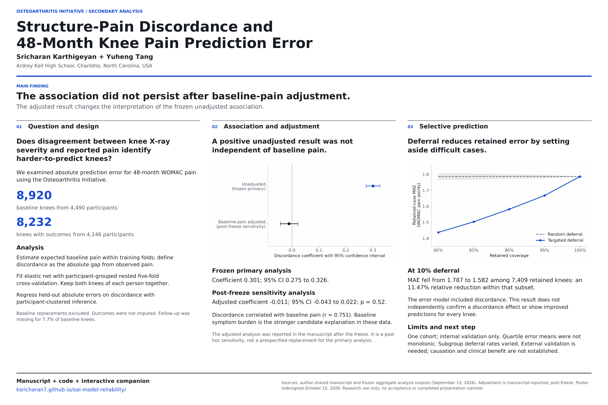

Methods, findings & interpretation
A scientific overview with the key adjustment result, two charts, and a QR link to this companion.
Read manuscript ↗ View poster ↗ Download PDF ↓AN INTERACTIVE RESEARCH COMPANION
When knee X-rays and pain tell different stories, how much should we trust a prediction? Explore the idea behind our osteoarthritis research.
Explore a fictional caseEducational demonstration. Every case below is fictional. The simulator uses transparent teaching formulas, not a fitted OAI model. Do not enter personal health information or use it for medical decisions.
01 / THE EXPLORER
Change the X-ray grade and pain level. Watch the mismatch change.
WHEN A MODEL STEPS BACK
A selective model can flag its most uncertain cases. That reduces coverage: fewer cases get a prediction.
YOUR FICTIONAL CASE
02 / WHAT THE STUDY FOUND
The chart below uses frozen aggregate OAI results—not the teaching formulas above.
SELECTED STUDY POLICY
Lower retained error means the model set aside difficult cases. It does not mean predictions improved for every knee, or that the deferred cases received better care.
| Deferred | Coverage | Retained knees | Targeted MAE | Random MAE |
|---|
Source: frozen uncertainty analysis, September 13, 2026. View original CSV ↗
03 / RESEARCH MATERIALS
Read the scientific poster, a concise research brief, or the presentation scripts.

Open full scientific poster ↗A scientific overview with the key adjustment result, two charts, and a QR link to this companion.
Read manuscript ↗ View poster ↗ Download PDF ↓The question, approach, actual findings, limitations, and what the study can support.
Read brief ↗ Download PDF ↓Two ready-to-rehearse scripts. Prepared materials, not evidence of a completed presentation.
Read scripts ↗ Download PDF ↓Prepared from the supplied manuscript and frozen aggregate analysis outputs. The manuscript reports the post-freeze baseline-pain-adjusted analyses; those results are labeled separately from the preserved primary analysis. These communication materials were prepared with ChatGPT/Codex assistance. This is not a manuscript revision, journal acceptance, independent expert review, or record of an actual presentation. No recognition is claimed here.
04 / UNDER THE HOOD
The simulator teaches the mechanism. The study supplies the evidence. Their numbers should never be confused.
Inspect the research repository ↗Expected pain by KL grade 0–4 is set to [1, 2, 4, 6, 8]. These are teaching values, not estimates from the OAI.
Discordance = |baseline pain − expected pain|Illustrative future score = 0.5 × baseline pain + 0.5 × expected painIllustrative error score = 1 + 0.25 × discordanceThe reference grid contains 105 fictional cases: all 5 grades × all 21 integer pain scores. Rank them by illustrative error, defer the highest requested percentage (rounded up), and resolve ties by fixed grade/pain order. The selected case belongs to that grid. Actual rounded coverage is reported below it. This policy is not the study's uncertainty model.
No patient data, fitted model weights, or medical inputs are collected. Changes stay in your browser.
Expected baseline pain was estimated by KL grade within training folds. The primary elastic-net model used baseline pain, radiographic measures, demographics, and injury/surgery history to predict 48-month WOMAC pain.
Participant-grouped nested five-fold cross-validation kept both knees of a participant together. A separate error model learned from inner out-of-fold prediction errors and scored untouched outer-test cases. That fitted error model is not loaded by this website.
The primary baseline cohort included 8,920 knees from 4,490 participants; the observed 48-month outcome cohort included 8,232 knees from 4,146 participants.
This is a secondary analysis in one cohort with internal validation. It does not establish causation, external generalizability, prospective clinical benefit, or a validated patient-facing prediction service.
Follow-up attrition and subgroup differences matter. The unadjusted discordance association did not persist in the manuscript's post-freeze baseline-pain-adjusted analysis. A positive unadjusted coefficient also does not mean every higher discordance quartile has higher average error; the published quartile means are not monotonic. Error scores are not calibrated prediction intervals.
Study authors: Karthigeyan and Tang. Research repository: KSRICHARAN7. The supplied technical package declares an analysis freeze on September 13, 2026. The public repository and this educational companion were prepared in October 2026.
This page makes no claim of journal acceptance, a posted preprint, independent replication, or a registered preregistration. See the repository for contributor and AI-assistance documentation.
THE NEXT QUESTION IS NOT JUST “WHAT WILL HAPPEN?”